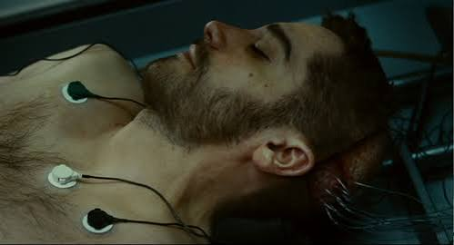

💻 / 🧠 SOURCE CODE (2011) — CERTIFIED MGC AU-59

⚖️ MGC Lower Court Docket
- ASSET TITLE: Source Code (2011) – The Eight-Minute Quantum Loop Ledger
- OFFICIAL REGISTRY GRADE: Certified MGC AU-59 (About Uncirculated / Razor-Thin Mint State Crossover)
- LOWER COURT JURISDICTION: Lower Tribunal Room / High-Concept Sci-Fi Docket
- CASE FILE: #063
- PRESIDING PANEL: Judge Tina, Chief of Cult Classics & Chief Grader MGC
📜 The Initial Inquest Bench Assessment & Luster Log
-
Baseline Bench Assessment:
Room Allocation ➔ AU-58 About Uncirculated. Under our strict 5x numismatic magnifying lens, Duncan Jones’s Source Code exhibits razor-sharp narrative velocity, tight 93-minute structural engineering, and an elite, grounded performance strike by Jake Gyllenhaal. The central eight-minute commuter train time-loop operates like a precision Swiss watch—each reset adds fresh forensic clues, ratcheting up the tension without wasting a single frame. However, the temporary base registry ledger reflects three distinct planchet flaws under judicial review before final certification:
🚨 The Three Judicial Motions Under Review:
1. The Alternate-Reality Ending Paradox: SUSTAINED.
-
The Verdict:
In the final minutes, when Colter Stevens’s life support is severed in the real world, the film abandons its own established rules—that the Source Code is merely a temporary eight-minute echo inside a dying brain—and reveals that he has somehow created a permanent, living alternate timeline inside Sean Fentress’s body. Under our strict 5x lens, this sudden pivot from hard-edged sci-fi rules to a neat Hollywood happy ending leaves an undeniable logic scuff on the planchet, permanently barring the asset from crossing into the Mint State (MS) vaults.
2. The Body-Snatching Ethical Leak: SUSTAINED.
-
The Verdict:
To secure Colter’s happy ending in the alternate timeline, the screenplay quietly erases the consciousness of innocent commuter Sean Fentress and hijacks his life, body, and romance with Christina without ever reckoning with the grim moral cost. While a casual viewer might breeze past the implication, our forensic lens catches the unresolved ethical blind spot, leaving a subtle handling mark on the coin’s narrative surface.
3. The Antagonist & Bunker Loop Mechanics: OVERRULED.
-
The Verdict:
The initial technical objections regarding antagonist clichés and bunker exposition drag are completely thrown out. The High Court rules that the eight-minute loops to hunt down the terrorist do not dull the alloy—they actively crest suspense and inject high-voltage urgency directly into the film’s engine! Every reset raises the stakes and keeps the narrative alive, successfully avoiding any second-act drag and proving how tightly calibrated the thriller mechanics truly are.
⚖️ Final Court Decree
- While the High Bench overrules the pacing and loop-structure objections—recognizing how brilliantly the terrorist hunt builds suspense and keeps the runtime electric—the two sustained third-act logic and ethical scuffs keep this high-luster sci-fi coin sealed one single hair’s breadth outside the Mint State vaults. It stands at the top of the About Uncirculated shelf.
- Permanently sealed in the sci-fi archives as a Certified MGC AU-59 Specimen. Case Closed. 🥈💻 Quantum Loop Locked. 🧠⚖️

• © 2026 MOVIE GRADING CONSENSUS. All Sovereign Rights Reserved.